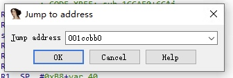

接到个工作，就是写个爬虫把广告视频数据爬下来，供公司同事模仿。
某音有app手机端和web网页端。web端比较好分析，但是刷了半天都没有看到广告影子，不知道是没有标识，还是说就没有广告投放。所以只能搞客户端了。
初次尝试
开始下载了5.0版的安卓模拟器，下载了比较旧的某音APP 17.3版本，发现是可以抓到包的，但是无法登陆，提示版本过低。所以只能升级APP版本，升级到最新版发现之前的抓包工具无法抓到包了，提示 SSL Handshake Failed。
SSL Pinning
在 android 7.0+以上的版本，就会有 SSL Pinning， 只信任系统内置的证书。"客户端在收到服务器的证书后，对该证书进行强校验，验证该证书是不是客户端承认的证书，如果不是，则直接断开连接。"
一：xposed 及其插件 JustTrustMe (可以配合 virtualxposed)
JustTrustMe 是一个用来禁用、绕过 SSL 证书检查的基于 Xposed 模块。JustTrustMe 是将 APK 中所有用于校验 SSL 证书的 API 都进行了 Hook，从而绕过证书检查。
二：将证书安装到系统证书中（需要 root ）
系统证书的目录是：/system/etc/security/cacerts/
每个证书的命名规则为：
Certificate_Hash 表示证书文件的 hash 值，Number 是为了防止证书文件的 hash 值一致而增加的后缀;
证书的 hash 值可以由命令计算出来，在终端输入 openssl x509 -subject_hash_old -in
某音证书锁定
在尝试了以上方案之后，发现还是无法绕过某音的证书锁定，可能不是用系统证书做校验，而是自己的证书。于是开始调研新的方案。
调研方案
- 一：修改libsscronet.so文件
- 二：使用Android Hook框架如 Frida
- 三：使用测试框架开源Appium或网易Airtest
方案一：
通过修改某音编译好的so库代码，修改判断证书部分函数返回值，达到绕过ssl pinning的目的，然后使用抓包工具抓包。
优点：不用配置hook框架，修改一次即可覆盖
缺点：没有核心技术能力，无法主动更新迭代
方案二：
类似方案一，通过hook框架，动态修改安卓内部代码函数的入参，返回值等信息，达到绕过ssl pinning的目的，然后使用抓包工具。
优点：框架热门资料多，较方案三可拓展性强
缺点：
- 简书抖音Frida代码
- 看雪论坛某书hook过程
- 51CTO抖音数据采集Frida教程，Frida Java Hook 详解：代码及示例
- frida教程
- 抖音数据采集Frida脱壳工具
- 快手、抖音短视频最新版抓包
方案三：
通过安卓测试框架截图，拿到相关数据
优点：简单，且多平台适用
缺点：拿不到准确数，不好拓展
再次尝试
方案一：
首先采用修改so的方式，由于本人没有吾爱的会员，所以只能下载到看雪上17.3版本的so文件。但是之前装好的安卓5.0搭配 某音17.5 是不需要破解，直接就可以抓包。所以尝试使用新版替换一下，结果发现抖音打不开了。。
由于不懂逆向，看不懂汇编，所以只能安装17.3版本抖音，下载原libsscronet.so文件与论坛大佬提供的做对比。
# 使用vim对比
vimdiff -bd org_libsscronet.so gai_libsscronet.so
# 切换窗口
ctrl+w
# 二进制转十六进制查看
:%! xxd
# 下一处不同
[c
# 上一处不同
]c
可是只发现了两处不同，和论坛大佬提到的四处对应不上。但是也没有头绪，只能留下没有技术的眼泪。

之后使用IDA PRO工具打开两个so文件，根据vim 提示的地址 001ccbb0 在IDA PRO中按快捷键 g 跳转。

然后对比两个文件的不同。


发现在 MOVS R0, #1 这里有不同。然后记录一下周边函数名称HandleVerifyResult & VerifyCert
于是下载某音APP20.5最新版，如法炮制。将1改为0，然后 apply patchs并将该文件放入原来位置，修改一下用户组和权限，重启虚拟机即可。
protobuf
抓到包之后发现里面文字显示都不正常，通过请求头发现，原来使用的谷歌的protobuf协议，类似json和xml用于两端数据传输，因为protobuf更节省空间，传输过程中将变量名省略，变量名都以文件的方式存储在服务器和客户端上，所以我们需要使用Python的
blackboxprotobuf库来解析。
本文由 Sajor
创作，采用 知识共享署名4.0 国际许可协议进行许可
本站文章除注明转载/出处外，均为本站原创或翻译，转载前请务必署名
最后编辑时间为: 2022-05-09T10:17:35+08:00